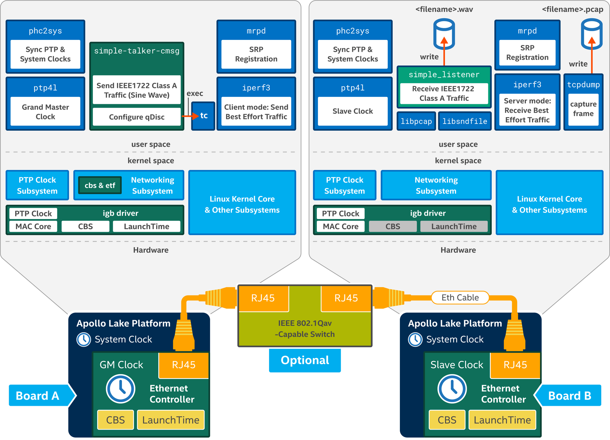

Internet applications such as audio/video streaming, VoIP telephony, and two-way video call use Real Time Protocol (RTP) that runs over User Datagram Protocol (UDP) on Internet Protocol (IP). The data streams of such applications carry huge contents and are sensitive to transmission latency. RTP streams contain time-stamps and a sequence number, which are used to manage stream transmission jitter, packet loss, and out-of-order. For in-vehicle infotainment or professional AV systems where the media source, speakers, and display units are located close by, Ethernet-based AVB technology is a better option than RTP because AVB uses IEEE 1722 AV Transport Protocol Layer 2 payload to carry multiple streams and has less header overhead, and no IP and UDP headers. Both AVTP and RTP media streams require low bounded latency and latency variation in the packet-switched network that means reserving transmission bandwidth for AV streams on the usually congested network.
To enable bandwidth reservation for time-sensitive traffic such as AVB streams, IEEE 802.1Qav describes a method to (1) use VLAN tag encoded priority to map to bandwidth reserved streams and (2) controlled bandwidth queue draining algorithms called Credit-Based Shaper (CBS).
IEEE 802.1Qat describes Stream Reservation Protocol (SRP) for registering and deregistering AV. IEEE 802.1Qat adds Multiple Stream Reservation Protocol (MSRP) on top of an existing network management protocol called the Multiple Registration Protocol (MRP). It is also worth mentioning that both Multiple VLAN Registration Protocol (MVRP) and Multiple MAC Registration Protocol (MMRP) use MRP. This is the capability provided by mrpd software in OpenAvnu.
Demo 2: IEEE 802.1Qav Credit Based Shaper
Demo 2 Credit Based Shaper: Software Components

Board A and
Board B run common software components. They are:
- daemon_cl: A user-space daemon that supports time synchronization based on IEEE 802.1AS Generalized Precision Time Protocol (gPTP).
- In
Board A,
daemon_cl runs in grandmaster clock mode.
- In
Board B,
daemon_cl runs in slave clock mode.
- mrpd: A user-space daemon that listens to SRP client request and establishes stream reservation with compatible IEEE 802.1Qav AVB devices (switch or endpoint). Its objective is to discover all networked devices and establish the AVB domain for devices that are AVB-capable.
- iperf3: A user-space utility commonly used for performing network throughput benchmarking. We use the utility as a best effort traffic generator. The utility always works in pairs:
client mode in Board A and
server mode in Board B.
- igb driver: A Linux kernel Ethernet driver for the Intel Ethernet Controller I210 that supports (1) PTP clock, (2) CBS, and (3) LaunchTime technology. CBS and LaunchTime functionalities are related to frame transmission, therefore these functionalities are used in
Board A, which acts as the source of IEEE 1722 Class A traffic.
The software components that run on
Board A only are:
- simple-talker-cmsg:
- An IEEE 802.1Qav sample application that acts as IEEE 1722 Class A traffic source.
- The application acts as SRP client and registers itself as AVB sender with
mrpd.
- The application uses tc utility to set up
cbs and
etf qdisc capabilities in Linux networking stack.
- The application sets the transmission time of each IEEE 1722 payload in control message (cmsg) with
cmsg_type SO_TXTIME.
- cbs and
etf qdisc:
- cbs qdisc: the demo uses
cbs qdisc in hardware offload mode. The CBS parameters (idle slope, send slope, high credit, and low credit) are passed to the
igb driver directly.
- Refer to
Queue Disciplines.
The software components that run on
Board B only are:
- simple_listener:
- A sample application (in OpenAvnu open source project - examples/simple_listener) that listens/receives IEEE 1722 traffic.
- The application acts as SRP client and registers itself as AVB listener with
mrpd.
- The application uses the libpcap API to receive IEEE 1722 traffic and stores the audio content into a file <filename>.wav by using the libsndfile API.
- tcpdump: A user-space utility uses to capture all Ethernet frames received at Board B including IEEE 1722 traffic and stores them in pcap format in <filename>.pcap file. This pcap file is then opened with Wireshark to display the traffic pattern (IEEE 1722 Class A traffic and Best Effort traffic).